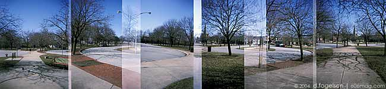

|
 |
|
The Pullman Historic District is like your grandmother's house: interesting and full of unappreciated miscellany, but you never go there. This intrepid reviewer, however, is here to bring it to all ye uninitiated. As always, there's a 10-point scale. Ten is good. One is bad.
|
|
01. Locating yourself in history, or, dystopian funlands. Rating: 8.2
Not having a car, I'm not that mobile in this city. I function fine without one – while I do pay more than I would like to cabbies, that's just par for the course – and make the Chicago Transit Authority my main means of transport. But the Pullman district is barely in the city. This isn't “South Side.” This isn't “far South Side.” This is “take-the-highway-to-get-there South Side,” sitting between 111th and 115th Streets.
My only previous contact with the area is most likely shared by so many in my position or, really, by anyone who uses I-90/I-94 to get to the city : the Pullman Bank building. I would use it as my personal highway marker, marking it as Chicago 's boundary point. Naturally, I had a firm grasp on what went on there, since I knew there was this guy named Pullman . And he started a bank. ‘Nuff said.
I had also heard of these things called Pullman train cars . But I thought of them as quaint and charming, like all rail travel in the United States, following the phenomenon of saying “boy, that sure would be great to take a train trip,” without meaning it in the slightest. It's the same as doing your taxes or running a marathon. While it would be great to complete the race or get your refund or ride the iron locomotive, if the opportunity presented itself I'd most likely be found impulsively checking my e-mail for the eighth time in an hour.
To give some real facts, the Pullman district was built between 1880 and 1892 as a living area for the employees of George M. Pullman, creating one of America 's first planned communities. That was 1880, and that trend hasn't become any less nefarious: Let's see – row after row of the same house, clones walking to and from a job in the same building for the same boss, never having to leave the safety and comfort that is their enclosed hamlet. Sounds like Microsoft employees. Or Naperville residents . Whichever.
|
|
02. Ugly historical societies resembling giant post-modern toasters. Rating: 9.4
The entire area is kept in good condition, well-maintained and groomed. I'm making a wild guess at this, really, since I visited at the end of winter, when things have a tendency not to grow. But from the remnants of foliage, it was apparent rose bushes and other such pleasantries bloom in the warmer months. There's maroon row houses, multicolored park benches, a restored hotel and … jutting out of the middle, an ugly grey concrete monolith more resembling a toaster than a building. That's jarring enough, but upon closer inspection, you discover it's the home of the Pullman Historical Society. I hope the amount of history contained herein isn't proportional to the architectural budget of the structure.
I'm contemplating this metaphysical impossibility of a horribly unfortunate granite slab structure in the middle of a plaza on the Chicago Landmarks list when the door opens.
“We're open,” the head poking out the door says. “You can come in.” The voice belonged to my angel, the woman who would show me the Gospel of Pullman, the Way of Landmarks.
She was direct from a place called Heaven That Was Bad Fashion: 1978, wearing a sweater that could only be described as “colorful.” Remember the kaleidoscope of color given off by those iridescent green Oakley windbreakers – the ones with “Thermonuclear Protection” written on them for some odd reason – when viewed under strong sunlight? There ya go. Her footwear was so old it was back in style, since she had on some variation of those hideously ugly Ugg boots. But, appealing to the passive media whore in me, she showed a video in lieu of giving a museum-style tour.
Like an Aesop fairy tale , the end of any story is ripe for the passing on of wise aphorisms, like “Slow and steady wins the race” or, for the lightweights among us, “an ounce of liquor is worth an hour of idiocy,” but in the case of the Pullman Historic video, we're presented with a question. “Who saves a landmark?” the voice-over asks. It was too much to hope for the query to be rhetorical, for that horribly third-rate video technique deserves neither response nor ridicule, but the cringe-inducing answer was on the way: “We all do.”
Who saves a landmark? We all do. Great. Let's just pretend this isn't a shameless pitch for property owners or developers in the area, and go with the civic duty angle of the call to action. Score for the Historical Society.
|
|
| ad |
|
| comments: intersection section |
|
subject: What about the strike
date: 04.01.2004
name: susan
comment:
Pullman riots? didn't a whole bunch of people die down there? |
| |
subject: Jealous
date: 04.02.2004
name: you are
comment:
Oh go fuck yourself. I bet your mother dresses like that woman. |
| |
subject: i went there once too...
date: 04.02.2004
name: Jack Binyon
comment:
Nice report. Here are some more thoughts on the area...
Pullman is like an island in the sea of Chicago's south-side. It's edges are somewhat desolate dry shores and the center is one part brooklyn to one part elgin. Kids are there (probably bored to death) at least i saw some. People are mixed colors and cultures -thankfully.Nearbye Beverly get a bit homogenated.
The black owned car wash in a historical horse stable was ironic and the hispanic corner store with 20 cent doughnuts a 1950's holdover. Arches abound in windows and overhangs in the vernacluar of Chicago School era buildings there.
The community was a failure at the end of it's historical heyday and holds a charged air of pride and stigma in it's streets today. Imagine a Norman Rockwell picture of a low rider blazing ground effects for a modern rendition of Pullman.
People were cool to me when I walked around there that day. It is entirely possible that the only real tourists who go visit are from outside this country. Ogling this working class proto-suburbia is in itself rewarding. I remember thinking that if you stood a row of row houses on end you would have the first skyscraper, which also was constructed around the same era downtown.
|
| |
subject: nz-quality
date: 04.08.2004
name: Mrs. H
comment:
I give up-no JD. Exceptionally good work |
| |
subject: Pink Flamingos
date: 04.11.2004
name: Crazy German Guy
comment:
“...someone stands up, screaming, “You can't handle the truth!” or something similar, inciting mobs to riot, ensuring the imminent destruction of the pink flamingos, the source of all the ire in the first place. It's the great wheel of karma.”
Green churches dedicated in 1882 are the stuff of much scare. The walls of my room are green, and I could feel the presence of a succubus prying her way through my chamber walls. I sought salvation in your link to the yard with “a few plastic pink flamingos,” but was met with those inciting mobs that threatened pink-flamingan destruction; they took the guise of the dreaded 404 Error. A few semi-Jungian observations:
404: Not Found,
606: Not Allowed to Leave.
Green Flamingos and Pink Flamingos are at opposite points of the color wheel. How many green flamingos has anyone ever seen? My maternal grandparents knew the power of flamingo pink and set genuine plaster flamingos in their front yard. I believe they also had one of those silver spheres on a pedestal to reflect flamingos of pink. Not to worry should the demons of green pierce their walls: the switch plates in their bedrooms were equipped with holy water receptacles.
Throw green+flamingos at Google and see how few hits you receive. Certainly, John Waters, anointed by William Burroughs as the Pope of Trash, recognizes the “source of all the ire in the first place.” I leave the gentle reader to green symbolism in Waters' works.
|
| |
| |